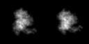

最小
最大
平均値
標準偏差
標準誤差
0
77.0909
6.29894
14.3204
0.223756
| オプション | 必須項目/選択項目 | 説明 | デフォルト |
|---|---|---|---|
| -i1 | 必須 | 入力ファイル1設定 | NULL |
| -i2 | 必須 | 入力ファイル2設定 | NULL |
| -o | 必須 | 出力ファイル設定 | NULL |
| -v | 選択 | モード１のときに設定。分離ラインの値を設定する | 0 |
| -m | 選択 | モード | 0 |
| -h | 選択 | ヘルプを表示 |
| モード | 説明 |
|---|---|
| 0 | 分離ラインなし |
| 1 | 分離ラインあり |
最小 |
0 |
|
最小 |
0 |
|  | 最小 |
0 |
最小 |
0 |
最小 |
0 |